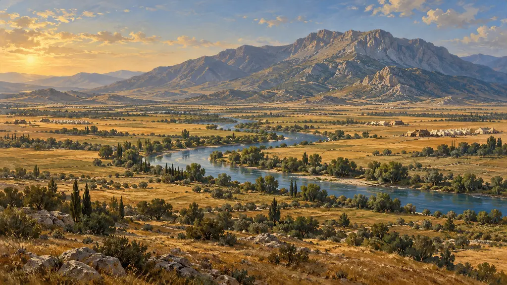
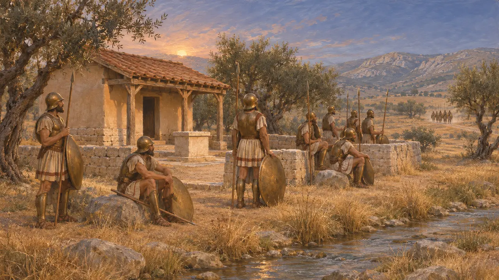
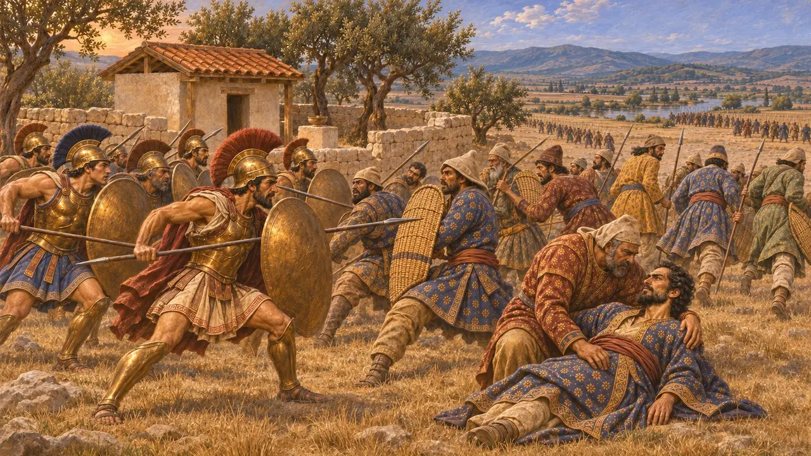
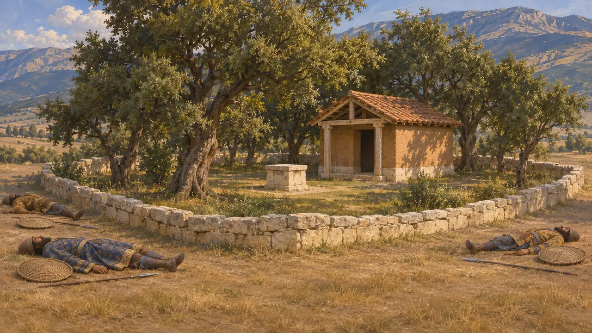
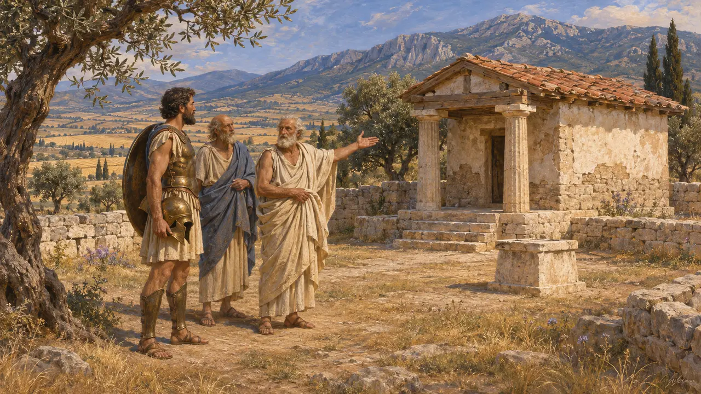
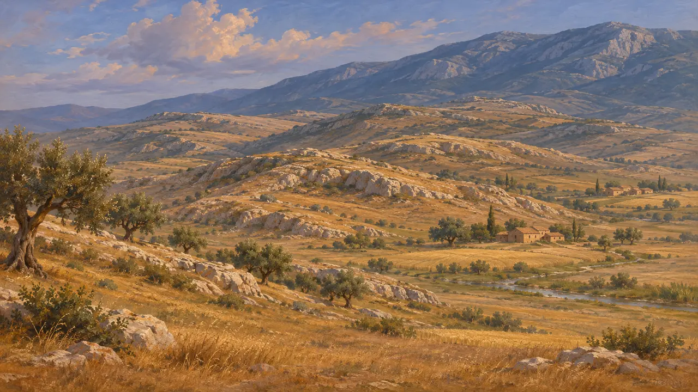

Священный участок Деметры
Святилище Деметры Элевсинской на поле битвы при Платеях, Беотия, 479 г. до н. э.
Святилище Деметры Элевсинской стояло у реки Молоэнт под горой Киферон. В 479 году до н. э. спартанцы и тегейцы сражались рядом с ним с персидской пехотой Мардония, и здесь решилась битва, положившая конец вторжению в Грецию. Геродот отмечал, что внутри священного участка не нашли ни одного павшего перса.
В игре: Священный участок присутствует на карте Платей как историческое сооружение; игрок его не строит. Игровая заметка о сражении и о пропавших телах персидских павших следует Геродоту.

Святилище у Молоэнта
Античное свидетельствоГеродот пишет, что, когда греки ночью меняли позицию, спартанцы снялись последними, потому что один из командиров, Амомфарет, отказался отступать. Они остановились у реки Молоент, в месте под названием Аргиопий, где стояло святилище Деметры Элевсинской. Там они дождались, пока к ним присоединится его отряд.
Herodotus 9.57

Бой у святилища
Античное свидетельствоМардоний бегом повёл своих персов через Асоп, чтобы ударить по спартанцам и тегейцам, и бой разгорелся у священного участка. Геродот пишет, что персы не уступали грекам ни в отваге, ни в силе, но им недоставало доспехов и выучки: они бросались вперёд поодиночке или малыми группами. Мардоний пал в бою вместе со своей отборной тысячей телохранителей, и тогда персы бежали.
Herodotus 9.59-9.65

Никаких мёртвых персов на священной земле
Античное свидетельствоГеродот отмечает как чудо, что, хотя битва шла у рощи Деметры, никто не видел, чтобы хоть один перс вступил в священный участок или погиб внутри него; большинство пало вокруг святилища на неосвящённой земле. Он предполагает, с осторожностью в суждениях о божественном, что богиня не приняла их, потому что они сожгли её святилище в Элевсине. Он добавляет, что и битва при Микале произошла возле священного участка Деметры Элевсинской.
Herodotus 9.65, 9.101

Оракул о равнине Деметры
Позднейшая легендаПлутарх, писавший примерно через шесть столетий, рассказывает о дельфийском оракуле, велевшем афинянам сражаться на равнине Элевсинской Деметры и Коры. Платейскому полководцу Аримнесту приснилось, что Зевс Спаситель открыл ему: места, названные оракулом, лежат близ Платей. Тогда старейшие платейцы показали ему древний храм Элевсинской Деметры и Коры близ Гисий у подножия Киферона.
Plutarch, Aristides 11

Место не установлено
СпорныйМестоположение святилища надёжно не установлено, а Молоэнт и Аргиопий невозможно определить с уверенностью. Топографы помещали его в разных точках на гребнях между Асопом и Кифероном: одни — близ Гисий, другие — западнее. Поскольку ход битвы зависит от этих позиций, реконструкции сражения при Платеях до сих пор расходятся.
W. K. Pritchett, Studies in Ancient Greek Topography I, 1965; J. F. Lazenby, The Defence of Greece 490-479 BC, 1993
Источники
- Herodotus 9.57-9.65
- Herodotus 9.101
- Plutarch, Aristides 11
- W. K. Pritchett, Studies in Ancient Greek Topography I, 1965
- J. F. Lazenby, The Defence of Greece 490-479 BC, 1993
- P. Green, The Greco-Persian Wars, 1996